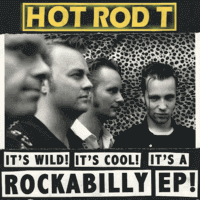

Hot Rod T - The Rockabilly EP (EP, 1999)
01 - Spellbound Hellbound (3:10)
02 - Got My Eyes On You (3:40)
03 - Hot Rod Man (2:14)
04 - Hot Spot (2:40)
05 - Jump Cat (3:35)
© Noise...What?! Records :: [Digital]
Notes
Review
365/366 (Project 366)
Distinctively perky rhythm is one of the main strokes of the album. Hot Rod T swirls the sound and relishes melodies from the very first track, doing this with its rockin' tune and even with a bit surfin' and groovin' flavouring. Full of fun. Vocalist is quite memorable, and more precisely his manner of performance - cool, fancy, fooling around and artistry. So suitable set for Rockabilly. Especially with this form of basically Modern, a bit (neo) style and with some revival rockin' and rollin'.
The first two songs are different in motive, but close in their mood. In addition, all these squeals and stuff like that bring non-stop heat. And, of course, Vidar Busk gave a special gloss to the sound of second track "Got My Eyes on You". The third track is a pretty wild. "Hot Rod Man" sounds refreshingly amazing, although it preservers the exposure of the entire album. Track heats up the vibe without reducing interest in listening. The fourth track, "Hot Spot", is just splendor. Nostalgic a little, kind and friendly sound. Melodious motive and these rebel drums (and other instrumental solos) that appears there are just sweetie as possible (for that kind of music). This track is also the song on the album which is the fastest on the sound and the sweetest in its motive. But the sound of such an interesting song is replaced by the cruel, swift and uncompromising "Jump Cat". It sounds just as cool as the previous one sounds nicely. The vocalist made the song. However, backing vocals are pretty harmonious too. A decently performed tune. What is the beginning and end of the album is on the one wave. A bit flopping tune. Recorded good, and the length of the track only adds appetite.
I decided to review Hot Rod T as "365/366" - because this band, their work and creativity, bright rockin' vibe and loose drive, its tone of their songs and performances always make me happy.. happy back. I adored their live video so much (dated back to 1999 - Hot Rod T - You Don't Know)! Whenever I feel unwell, watching their performance and their sound gives me a reason to move on. A fab sensation.